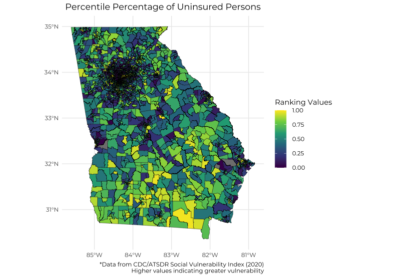

library(sf)# print out the layes that are availablest_layers("data/SVI2020_GEORGIA_tract.gdb/")# read in as sf objecttracts <-read_sf("data/SVI2020_GEORGIA_tract.gdb", layer ="SVI2020_GEORGIA_tract")library(showtext)font_add_google(name ="Montserrat", family ="Montserrat")showtext_auto()library(tidyverse)map <-ggplot(tracts, aes(fill = EPL_UNINSUR)) +geom_sf(lwd =0.15, color ="black")# we use filter to remove outlierstracts %>%filter(EPL_UNINSUR >-200) %>%ggplot(aes(fill = EPL_UNINSUR)) +geom_sf(lwd =0.15, color ="black")# instead of removing the values, we make the values missingtracts %>%mutate(EPL_UNINSUR =ifelse(EPL_UNINSUR >-200, EPL_UNINSUR, NA)) %>%select(EPL_UNINSUR) %>%ggplot(aes(fill = EPL_UNINSUR)) +geom_sf(lwd =0.15, color ="black") +# using pre-defined color schemescale_fill_viridis_c(option ="viridis") +#specify desired color gradient#scale_fill_gradient(low = "red", high = "yellow") + theme_minimal() +labs(title ="Percentile Percentage of Uninsured Persons",#subtitle = "Ranking values range from 0 to 1, with higher values indicating greater#vulnerability",caption ="*Data from CDC/ATSDR Social Vulnerability Index (2020) Higher values indicating greater vulnerability", fill="Ranking Values" ) +theme(plot.title =element_text(hjust =0.5),text =element_text(family ="Montserrat") )

Note
Created using data from the 2020 CDC/ATSDR Social Vulnerability Index on Georgia. SVI Data
Code
library(tidyverse)cdcdata <-read_csv("data/National_Health_and_Nutrition_Examination_Survey__NHANES__-_National_Cardiovascular_Disease_Surveillance_System.csv")count(cdcdata, Class, Topic)overall_heart_disease <-filter( cdcdata, Topic =="Hypertension", Break_Out_Category =="Overall", Data_Value_Type =="Age-Standardized", QuestionId !="NH034", QuestionId !="NH024",!is.na(Data_Value))hd_clean <-separate(overall_heart_disease, YearStart, c("start", "end"), sep ="-") %>%mutate(start =as.numeric(start),end =as.numeric(end) ) %>%mutate(label =case_when( QuestionId =="NH033"~"BP Control among US adults (BP=130/90)", QuestionId =="NH023"~"BP Control among US adults (BP=140/90)", QuestionId =="NH030"~"Prevalence of HTN (BP=130/90)", QuestionId =="NH020"~"Prevalence of HTN (BP=140/90)", QuestionId =="NH031"~"HTN awareness among adults with HTN (BP=130/90)", QuestionId =="NH021"~"HTN awareness among adults with HTN (BP=140/90)", QuestionId =="NH032"~"HTN Medication Use in adults with HTN (BP=130/90)", QuestionId =="NH022"~"HTN Medication Use in adults with HTN (BP=140/90)" ) )library(showtext)font_add_google(name ="Montserrat", family ="Montserrat")showtext_auto()ggplot(hd_clean, aes(start, Data_Value)) +geom_smooth(method ="lm", color ="#A3C7D6", fill ="#83A2FF") +geom_errorbar(aes(ymin = Low_Confidence_Limit, ymax = High_Confidence_Limit), width =0.7,color ="#9F73AB" ) +geom_point(color ="#3F3B6C") +facet_wrap("label", scales ="free_y", ncol =3) +theme_light() +labs(title ="National Cardiovascular Disease (1999 - 2016)",subtitle ="Data from NHANES provided by CDC",x ="Year", y ="Age Standardized Rate", ) +theme(plot.title =element_text(hjust =0.0),text =element_text(family ="Montserrat"),strip.background =element_rect(fill ="#3F3B6C") )
Note
Created using data from The National Health and Nutrition Examination Survey (NHANES)


.png)